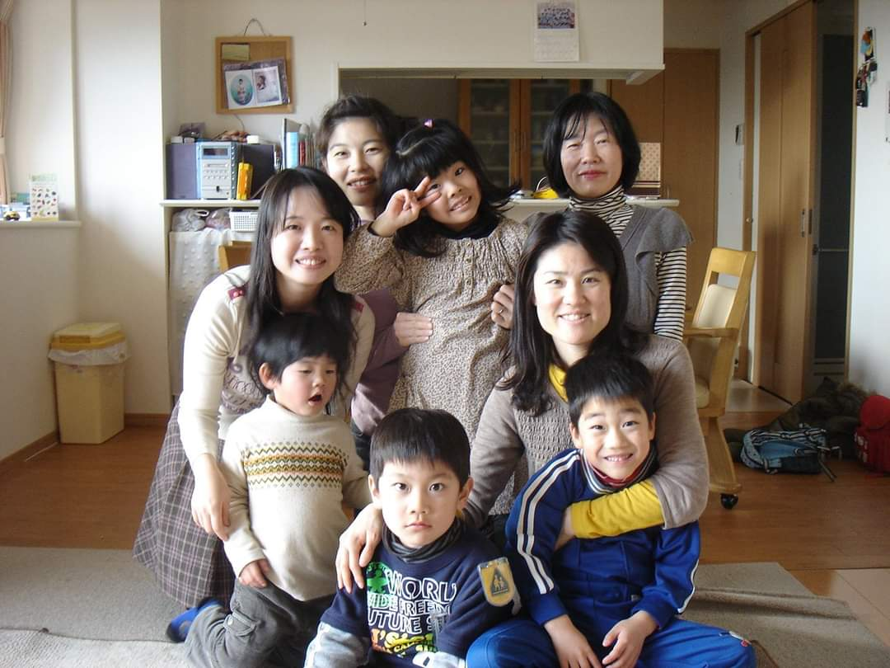
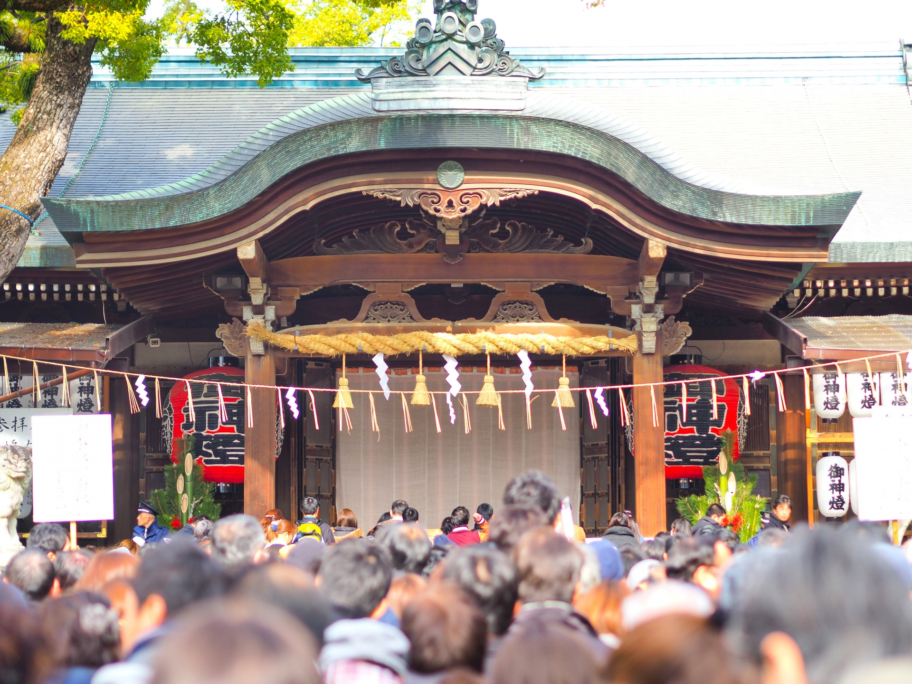
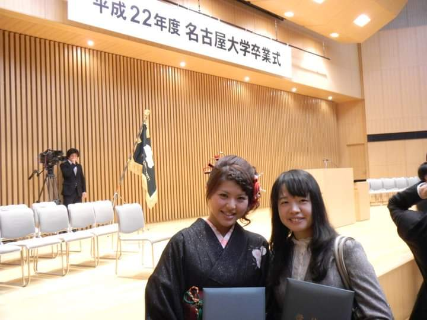
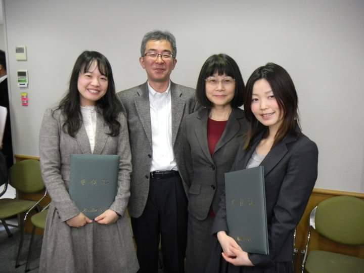

전공을 선택하신 이유가 무엇인가요?
대학교 전공은 일본어는 아니고 한문학이었어요. 2학년 때부터 복수 전공으로 이제 일본어 한문학을 하다가 너무 일본어 하고 싶어서,
복수 전공으로 이제 2학년 때부터 일본어를 하게 됐어요.

초등학교 때부터 알던 일본인 친구랑 펜팔을 하다가, 일본어에 관심을 갖게 됐어요. 그래서 일본에 대해서 알아보고
‘대학교에 가면 꼭 일본어를 배워봐야지’라는 생각이었는데 처음에는 일본어학, 국문학, 한문학 중에 고민했어요.
그런데 한문학과에 진학해서 일본어에 대한 미련이 계속 남았던 거죠. 그래서 2학년 때부터 복수 전공을 하게 되고 지금까지 온 것 같아요.
대학 생활 및 경험은 무엇을 하셨나요?
저는 학생회에서 문예 부장이었어요. 축제 때 학생들이 ‘바위처럼’같은 걸 많이 췄거든요.
그리고 2학년 때는 총대 했어요. 그때 선후배랑 친해질 수 있어서 되게 인간관계가 좋았던 거 같아요.
그 중에서도 기억에 남는 것이 있다면?
2학년, 3학년 동안 학생회를 했으니까 축제 준비하는 게 가장 기억에 남는 거 같네요. 부스에서 술 팔고 그랬던 기억이 있어요.
일본어를 배우면서 가장 흥미로우셨던 경험은 무엇인가요?

책으로 배우는 일본어랑 실제로 쓰는 일본어가 너무 달랐던 게 기억에 남아요. 제가 교환학생 갔을 때 친구를 만났는데,
그 친구가 하는 말을 하나도 못 알아들어서, 충격받았어요.
그다음엔 잘 해도 자랑을 안 한다든지, 처음 만났을 때 개인적인 얘기를 안 한다든지, 문화적인 차이를 많이 느낀 것 같아요.
사회적인 요인에 관한 거예요. 예를 들면 불만을 이야기할 때, 거절을 할 때 등등 한국이랑 일본이 다르잖아요. 이런 경험들 덕에 연구를 시작했던 것 같아요.
일본 문화에서 영향을 받은 점은?
유학 생활을 오래 했으니까 남에게 피해 끼치는 걸 꺼려요. 한국과 일본이 사고방식이 극과 극일 때가 있어요.
한국에는 ‘우리가 남이가’ 이런 말도 있지만, 일본은 가족끼리도 지켜야 될 선이 있는 느낌이잖아요.
그래서 저는 한국에 오랜만에 들어오면 조금 더 낯설 때가 있어요. 네가 연장자니까 네가 돈 다 내라, 뭐 이런 거.
지금은 괜찮은데 초반에는 그게 되게 낯설었어요.
참여했던 일본 관련 행사나 축제 중에서 기억에 남는 것이 있다면?

행사라기보다는, 하츠모우데. 1월 1일에 절에 가는 거 있잖아요.
아츠타 신궁이라고 엄청 유명한 절이 있는데, 1월 3일에 갔어요. 근데 지하철 내리는 순간부터 계단에 사람들이 엄청 많았어요.
사람이 너무 많아서 못 걸었어요. 와 이건 안되겠다 싶어서 돌아가려고 했는데 뒤로도 점점 줄을 서는 거죠. 일단 천천히 움직이긴 했는데,
거의 1시간 반 걸렸어요. 그리고 중간에 빠져서 그냥 야키소바 사 먹었어요.
그때 그렇게 사람 많은 거 보고, 진짜로 일본 사람들이 다 하는구나 싶었어요.
우리는 해돋이 안 보러 가도 되잖아요. 잘 안 가잖아요? 그런 점에서 좀 달라서 신기했어요.
대학원 진학을 생각하신 이유가 무엇인가요?
취업을 바로 하기에는 준비가 안 된 것 같아서 겁이 나서 일단 대학원에 가서 생각을 해보기로 했어요.
대학원 석사과정은 4학기 중에 2학기와 3학기를 와세다 대학에서 교환학생을 했어요.
우리나라랑 다르다고 생각한 게, 그때 우리나라 대학원은 학문을 추구하기 위해서 가는 사람이 적었고,
결과적으로는 취업으로 연결이 되는데, 일본은 정말 공부만 하는 애들이 오는 거예요. 애들이 미친 듯이 공부를 했어요.
그때 사회언어학이라는 수업을 듣게 됐는데, 2학기를 지내면서 공부를 더 해보고 싶다는 생각이 들었어요.
그래서 공부를 조금 더 해볼까? 라고 생각했으니까 저한테는 되게 중요한 터닝 포인트 같아요. 그거 안 갔으면 인생이 바뀌었을 것 같아요.
대학 전공과 대학원 전공이 다른 이유는 무엇인가요?
복수 전공으로 일본어를 하다가, 졸업하고 석사 과정을 갔다고 했잖아요.
‘학습자들을 위해서 내가 뭘 할 수 있을까’가 궁금해져서 일본어 교육으로 바꿨어요.
일본어학이랑 일본어 교육이랑 또 다른 분야거든요.
그중에서도 사회언어학을 하면서,
일본인들과 대화할 때 어떻게 하면 오해 없이 원만한 대인관계를 유지할 수 있을까, 이런 데에 관심이 많았던 것 같아요.
‘어떻게 하면 일본인들과 한국인들이 좋은 관계로 잘 지낼 수 있을까?’ 이런 걸 목표로 삼아서 공부를 하다 보니까 일본어 교육을 시작한 것 같아요.

대학과 대학원의 차이점은?

학부생은 지도 교수가 있어도, 대미설이나 취업 커뮤니티 같은 걸 이끄는 개념이잖아요.
그런데 대학원은 지도 교수가 붙어서 학문적인 지도를 해줘요.
예를 들어서 내가 일본어 교육을 했잖아요.
그러면 내 지도 교수님은 일본어 교육을 해야 되는 거예요. 음성학이나, 문법을 하시는 분이 내 지도 교수가 될 수는 없어요.
대학은 정말 전반적으로 얕고 넓게 배운다면 대학원은 지도 교수가 거의 자기 학문을 전수하는 느낌이라서, 깊고 심도 있게 파고드는 것 같아요.
한국 대학원과 일본 대학원의 차이가 있나요?

한국은 대학원을 졸업하면 고스펙, 고학력이 된다고 생각하는 것 같아요.
대학원을 감으로써 더 권위 있는 일을 하거나 더 좋은 회사로 취업하는 게 목표인 사람들이 많아요.
근데 일본은 다른 생각 없이 무조건 공부를 위해서 가요.
물론 우리는 어느 순간부터 취업난이 너무 심해지고,
공부를 하고 싶어도 취업을 먼저 생각할 수밖에 없는 구조가 돼 버렸잖아요. 그래서 그런 것 같아요.